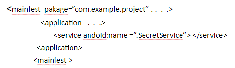
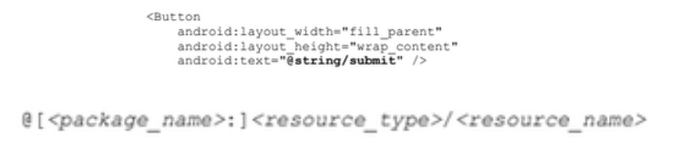

Manifest y Recursos
3 days ago
Información general de recursos
Con el fin de brindar compatibilidad, es útil externalizar recursos como imágenes y strings, estos se organizan en el directorio “res/” del proyecto en el cual se crean subdirectorios para poder organizar los diferentes recursos y tipo de configuración. Esto ayuda a que nuestro proyecto se adapte a diferentes idiomas o tipos de pantalla ya que hoy en día hay mucha variedad de dispositivos con android y cada uno posee características distintas.
Diseño de app predeterminado para todos los dispositivos
Diseño de app distinto según el tamaño de la pantalla de los dispositivos
En cualquier tipo de recurso , puedes especificar recursos predeterminados y varios recursos aternativos para la aplicacion
- Los recursos son los que debes usar sin importar la configuracion del dispositivoo cuando no hay recursos alternativos que conicidan con la configuracion actual
- Los recursos alternativos son los que diseñaste para usar sin importar la configuracion especifica A fin de especificar que grupo de recursos es uan configuracion especifica
Tipos de recursos
- Recursos predeterminados: Son los que se usan sin importar la configuración del dispositivo o cuando no hay recursos alternativos que coincidan con la configuración actual.
- Recursos alternativos: Son los diseñados para una configuración en específico, esto para tener configuraciones apropiadas según el tipo de dispositivo en el que se usa la aplicación
Ejemplo
Si se guarda un diseño en “res/layout/” este sería un recurso predeterminado, pero se puede especificar que si la pantalla está en horizontal se usaría el diseño guardado en “res/layout-land/”.
Android aplica automáticamente los recursos si ve una coincidencia entre la configuración actual del dispositivo y los nombres de los recursos.
Provisión de recursos
Al externalizar los recursos de nuestro proyecto se puede acceder a ellos mediante un identificador que se generan en la clase “R” del proyecto
Agrupación de tipos de recursos
Hay que separar cada tipo de recursos en el directorio “res” para tener más ordenado todo y poder acceder de manera más fácil, podemos tener subdirectorios para imágenes, strings, íconos, etc. Es importante tener los nombres correctos en los directorios.
Nombres para directorios de recursos
Advertencia
Nunca se debe guardar un archivo de recursos en el directorio “res/” porque se producirá un error en el compilador, es importante organizar los recursos de la mejor manera para tener un proyecto más ordenado.
Es necesario guardar los recursos alternativos en el mismo directorio en el que están los recursos predeterminados y con el mismo nombre (hdpi significa que es una configuración para dispositivos con pantalla de alta densidad)
MCC y MNC
- MCC es el código de país del dispositivo móvil y MNC es el código de red
- Un ejemplo sería “mcc208-mnc00” que quiere decir un dispositivo en Francia con la compañía telefónica Orange.
- Si el dispositivo usa conexión GSM, los valores de MCC y MNC vienen de la tarjeta SIM.
- Se puede usar solo el MCC para incluir recursos legales de un país en específico para la aplicación.
Idioma y Región
Se define mediante un código de idioma de dos letras (ISO 639-1) seguido por un código de region de dos letras (ISO 3166-1-alfa-2) de dos letras precedido por un “r” en minúscula.
Ejemplo: en-rUS
El prefijo “r” se usa para distinguir la región del idioma. Esto se puede cambiar en el ciclo de vida de la app si el usuario decide cambiarlo
Dirección del diseño
LDRTL significa “dirección del diseño de derecha a izquierda” y LDLTR “dirección del diseño de derecha a izquierda”;esto se puede aplicar a recursos como diseños, elementos de diseño o valores.
smallestWidth
Es la parte más pequeña del largo y ancho de la pantalla de un dispositivo, esto se puede usar para asegurar que sin importar la orientación de la pantalla, la aplicación tenga reservada n dps de ancho disponible para la interfaz.
Por ejemplo si configuramos para que la dimensión más pequeña sea siempre de al menos 600dp se puede usar para crear los recursos necesarios en “res/layout/layout-sw600dp/”, la app aplicará esos recursos si el ancho o alto mínimo de la pantalla es de 600dp, es una característica fija, es decir que no se modifica cuando la orientación de la pantalla del dispositivo cambia.
Ancho disponible
- Este especifica el ancho de pantalla mínimo disponible en unidades “dp” en las cuales se debe de usar el recurso definido por el valor '
'. - Este valor de configuración se modificará cuando la orientación cambia entre horizontal y vertical para coincidir con el ancho real actual.
- Cuando proporcione directorios de múltiples recursos con valores diferentes para esta configuración el sistema utilizará el más cercano al ancho de pantalla actual del dispositivo.
Altura disponible
- Especifica la altura de pantalla mínima disponible en unidades “dp” en las cuales se debe de usar el recurso definido por el valor '
. - Este valor de configuración se modificará cuando la orientación cambia entre horizontal y vertical para coincidir con el ancho real actual.
- Cuando proporcione directorios de múltiples recursos con valores diferentes para esta configuración el sistema utilizará el más cercano a la altura de pantalla actual del dispositivo.
Tamaño de pantalla
- Small: Pantallas que son de tamaño similar a una pantalla QVGA de baja densidad. El tamaño de diseño es de 320x426 unidades dp.
- NormalPantallas que son similar a las pantallas HVGA de densidad media. El tamaño de diseño es de 320x470 unidades dp.
- LargePantallas que son de tamaño similar a una pantalla VGA de densidad media. El tamaño de diseño es de 480x640 unidades dp.
- XlargePantallas que son considerablemente más grandes que la pantalla HVGA de densidad media tradicional. El tamaño de diseño es de 720x960
Pantalla
- Long: Pantallas largas WQVGA, WVGA, FWVGA
- NotLong: Pantallas que no son largas como QVGA, HVGA Y VGA
- Round: Pantallas circulares, como dispositivos wearable circular
- NotRound: Pantallas rectangulares como los teléfonos y tablets
- Port: El dispositivo está en orientación vertical
- Land: El dispositivo está en orientación horizontal
Aspecto de pantalla:
Pantalla circular:
Orientación de la pantalla:
Modelo de IU
- Car: El dispositivo se muestra en un conector para autos.
- Desk: El dispositivo se muestra en un conector para escritorio
- Televisión: El dispositivo se muestra en una televisión y proporciona una experiencia de “diez pies” en la que su UI esta en una pantalla grande de la cual el usuario se encuentra alejado.
- Appliance: El dispositivo se utiliza como un aparato, sin pantalla.
- Watch: El dispositivo tiene una pantalla y se usa en la muñeca
Densidades de píxeles de la pantalla
- ldpi: Pantallas de baja densidad, aproximadamente 120 dpi
- mdpi: Pantallas de densidad media, aproximadamente 160 dpi
- hdpi: Pantallas de alta densidad, aproximadamente de 240 dpi
- xhdpi: Pantallas de densidad extra alta, aproximadamente 320 dpi
- xxhdpi: Pantallas de densidad extra extra alta, aproximadamente 480 dpi
- xxxhdpi: Pantallas de densidad extra extra extra alta, aproximadamente 640 dpi
- nodpi: Se puede utilizar para los recursos de mapas de bits que no se desea que se escalen para que coincidan con la densidad del dispositivo
- tvdpi: Entre mdpi y hdpi, aproximadamente de 213 dpi
Disponibilidad del teclado
keysexposed: Dispositivo que tiene teclado disponible, se puede utilizar el teclado de software incluso cuando el teclado de hardware no está expuesto al usuario
keyshidden: El dispositivo tiene un teclado de hardware disponible, pero está oculto y el dispositivo no tiene un teclado de software habilitado.
keysoft: El dispositivo tiene un teclado de software habilitado, sea visible o no
Método principal de entrada de texto
nokeys El dispositivo no tiene teclas de hardware para le entrada de texto.
querty El dispositivo tiene un teclado qwerty de hardware que puede ser visible para usuario o no.
12key: El dispositivo tiene un teclado de hardware de 12 teclas, que puede ser visible para el usuario o no
Disponibilidad de las teclas de navegación
- navexposed: Las teclas de navegación están disponibles para el usuario
- navhidden: Las teclas de navegación no están disponibles
Método principal de navegación no táctil
- nonav: El dispositivo no tiene otro recurso de navegación que no sea el uso de la pantalla táctil
- dpad: El dispositivo tiene un controlador de dirección para la navegación
- trackball: El dispositivo tiene una bola de seguimiento para la navegación
- wheel: El dispositivo tiene una rueda de dirección para la navegación
Manifiesto de la app
Todas la aplicaciones deben tener un archivo AndroidManifest.xml en su directorio raíz ;Este archivo proporciona información que el sistema debe tener para ejecutar el código de la app
El Manifest hace lo siguiente
- Nombra el paquete java para la aplicación(este nombre servirá de identificador único)
- Describe los componentes de la aplicación tales como actividades , servicios , receptores de mensajes y los proveedores de contenido que la integran ; también nombra las clases que implementan cada uno de los componentes y publican sus capacidades (como los mensajes Intent)
- Determinan los procesos que alojan los componentes de la app
- Declaran los permisos que debe tener la aplicación para acceder a la partes protegidas de la API e interactuar con otras apps
- Enumera las clases Instrumentation que proporcionan un perfil y otra información mientras la aplicación se ejecuta (la misma que se eliminará antes de la publicación de esta )
- Declara el nivel mínimo de Android API que requiere la aplicación
- Enumera las bibliotecas con las que se debe estar vinculada la aplicación0
Estructura del archivo Manifest
Convenciones del archivo Manifest
Elementos
- Solo se requiere los elementos <'manifest> y <'application>' .al menos uno de ellos debe estar presente y solo puede ocurrir una vez ; la mayoría de los otros elementos pueden ocurrir varias veces o ninguna vez sin embargo al menos uno de ellos debe estar presente para que el archivo manifest se autil
- Si un elemento contiene algo ,serán otros elementos ; todos los valores se establecen mediante atributos en lugar de datos de carácter en un elemento
por lo general lo elementos de un mismo nivel no están ordenado pero siempre un elemento <'activity-alias> debe seguir de un <'activity> y un elemento <'application> debe ser un elemento del
Atributos
- En general todos los atributos son opcionales pero existen algunos que deben especificarse para que un elemento cumpla su propósito
- Para los atributos realmente opcionales , se menciona un valor predeterminado o se indica lo que sucede si no se especifica algún valor
- A excepción de los atributos del elemento raíz
, todos los nombres de atributos comienzan por el prefijo android
Ejemplo android:alwaysRetainTakState debido a que este prefijo es universal
Declaración de nombres de clases
- Muchos elementos corresponden a objetos Java , incluidos los elementos para la aplicación en sí y sus componentes principales :actividades ,servicios ,receptores de mensajes y proveedores de contenido
- Si definimos un subcase , como se lo hace generalmente para las clases de componentes (Activity,Service,BroadcastReceiver y ContentProvicer), la subclase se declara mediante un atributo name ; el nombre debe incluir la designación completa del paquete
- Sin embargo , si el primer caracter string es un punto , el nombre del paquete de la aplicación (tal como lo especifica el atributo package) se adjunta al string 
- Cuando un componenete inicia, el sistema android crea una instancia de la subclase mencionada .Sino se especifica una subclase ,crea una instancia de la clase base
Varios valores
Se puede especificar más de un valor , el elemento se repite casi siempre, en algún lugar de enumerar varios valores en un único elemento
Valores de recursos
- Algunos atributos tienen valores qe se pueden mostrar a los usuarios , como una etiqueta y un icono para una actividad . Los valores deben localizarse y establecerse desde un recurso o tema (deben expresarse de la siguiente manera )
- Se puede omitir el pakage si el recurso se encuentra en el mismo paquete de la aplicación ;type es un tipo de recurso ,como string o drawable (elemento de diseño ). name que identifica al recurso específico
- Los valores de un tema se expresan de manera similar , aunque con un ? al inicio en lugar del @
@[ pakage :]typename
<'activity android:icon”@dawble/smallPic” . . . >
?[ pakage :]typename
Valores de string
Cuando el valor de un atributo sea un sin debes usar dole barr invertida \\ para diferenciarlo de los caracteres \\n para una nueva línea o \\uxxx paran caracter Unicode
Funciones del archivo
Filtros de intents
- Los componentes centrales de una app se activan mediante intents
- Los componentes anuncian los tipos de intents que pueden responde mediante filtros estos mismo se especifican usando <'inten-filter>
Iconos y etiquetas
- Varios elementos tienen atributos icon y label para el uso de los usuarios (se puede incluir un atributo descripción )
- El icono y la etiqueta establecidos para un filtro de intents se usan para representar un componente
Permisos
- Un permiso es una restricción que limita el acceso a una parte el código
- Si una aplicación necesita acceso a una característica debe declarar que la requiere usando <'uses-permission>
Bibliotecas
- Toda aplicación está vinculada con las bibliotecas predeterminada de Android esta misma incluye paquetes básicos para crear las apps
- Para su vinculación se debe solicitarse explícitamente mediante un elemento <'uses-library>
Provisión de la mejor compatibilidad de dispositivos con recursos
Para qué la aplicación admita varias configuraciones de dispositivos, es importante siempre proporcionar recurso predeterminadas para cada tipo de recurso utilizado por tu aplicación.
Proporcionar recursos predeterminados es importante no sólo porque la aplicación podría ejecutarse en una configuración qué no se había previsto, sino también porque las nuevas versiones a veces agregan calificadores de configuración que las versiones anteriores no admiten.
Cómo Android encuentra el recurso de coincidencia óptima
Cuando se solicita un recurso para el cual se proporciona alternativas Android selecciona qué recurso alternativo utilizar en tiempo de ejecución según la configuración del dispositivo actual
Cómo Android encuentra el recurso de coincidencia óptima
Acceso
Una vez que se proporciona un recurso en la aplicación , se lo puede aplicar al hacer referencia a su ID de recurso. Todos los ID de recursos se definen en la clase R del proyecto que la herramienta aapt genera automáticamente.
Para cada tipo de recurso hay una subclase R y para cada recurso de este tipo hay un valor entero estático.
El ID del recurso siempre está compuesto por el tipo de recurso (string, drawable y layout) y el nombre del recurso
Acceso a recursos en código
Se puede usar un recurso en código al pasar el ID de recurso cómo un parámetro del método.
Acceso a archivos originales
Existen casos donde se podría necesitar acceder a los archivos y directorios originales. Estos archivos no se pueden guardar en res/ ya que el único elemento que permite leer un recurso desde res/ es el ID de recurso. Cómo alternativa se puede guardar estos recursos en el directorio assets/.
Acceso a recursos desde XML
Se puede definir valores para algunos atributos y elementos XML usando una referencia a un recurso existente.
Referencia a atributos de estilo
Un recurso de atributo de estilo te permite hacer referencia al valor de un atributo en el tema aplicado actualmente.